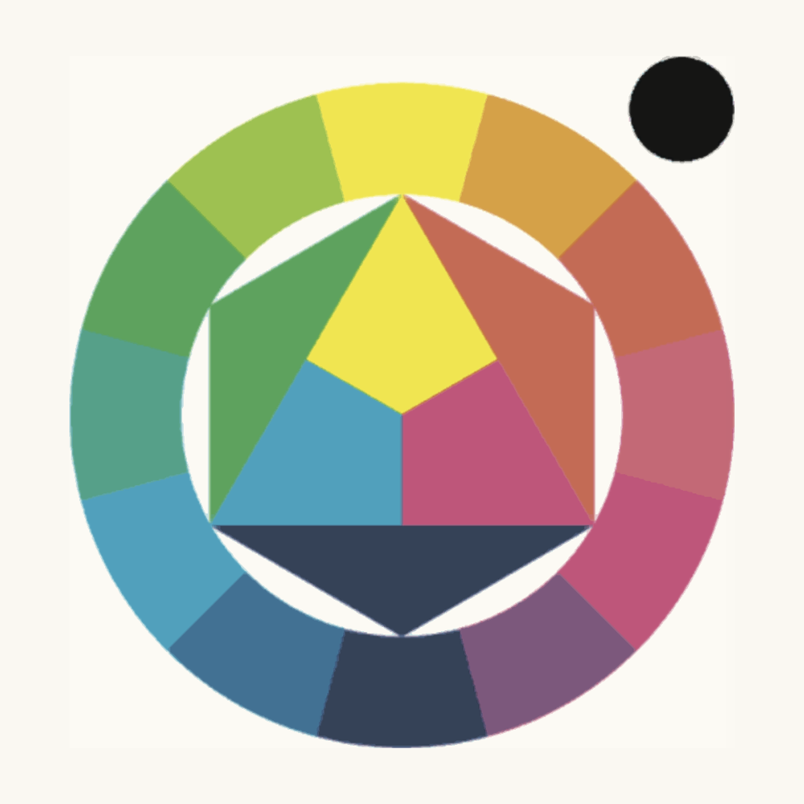
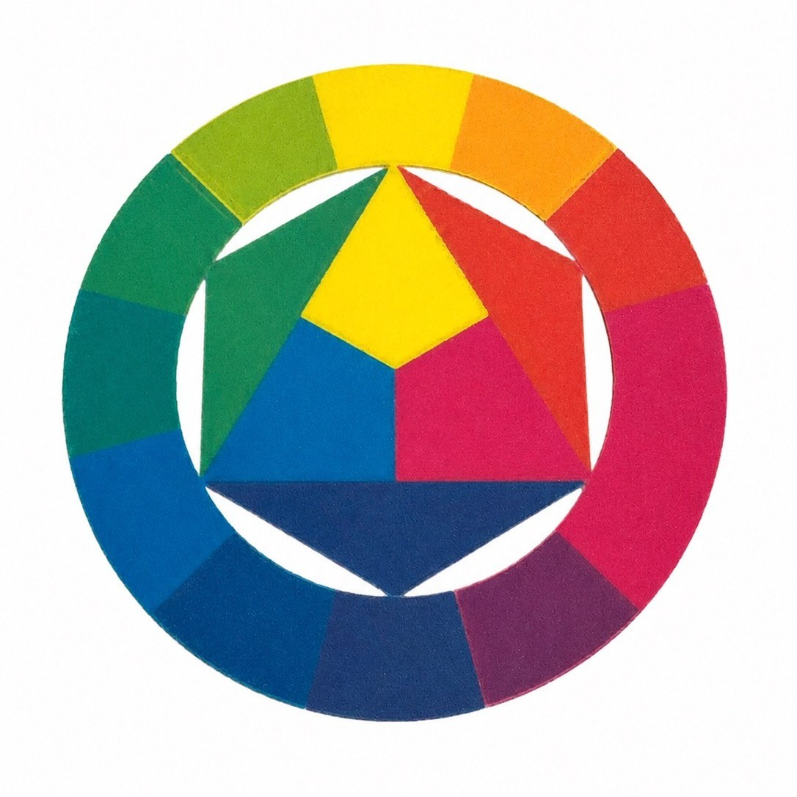

CMYKForge Standard
The local-first workflow for full-spectrum color FDM printing.
In active development — beta not open yet. Details may change before release.
Real CMYKForge Progress
Real software builds, slicer workflows, and physical multi-material prints — updated as the beta develops.



The Color Engine
CMYKForge Standard is designed around a color-focused generation workflow. The software analyzes image color, prepares CMYK-style material strategies, and helps translate visual information into printable model data for multi-material FDM printers.
CMYK-Based Preparation
Uses cyan, magenta, yellow, black, and optional white material planning to prepare image-based models for color FDM printing.
Filament-Aware Workflow
Helps account for selected filament behavior so color preparation is better connected to the materials actually being used.
Preview-Focused Process
Built to help users understand expected visual results before exporting files for slicing and printing.
From three primary filaments to colors between them.
Cyan, magenta, and yellow overlap in planned layers to reach the colors between them — the same principle behind the color wheel. Actual results depend on calibration and filament behavior.
Offline by Design
CMYKForge Standard is the local-first version: preparing image-based models, working with filament profiles, previewing expected results, and generating slicer-compatible files — without cloud processing or AI tools.
No Cloud Processing
The generation workflow is designed around local use.
No AI Required
Does not depend on cloud AI or local AI models by default.
Optional AI Path
Optional AI tools may be added later through a separate edition.
Every color decision is made before the first layer prints.
The Systems Behind CMYKForge Standard
CMYKForge Standard is more than a visual editor. Under the interface, multiple systems work together to turn an image into a color-aware 3D printable model.
Image Analysis System
CMYKForge Standard begins by reading the uploaded image and preparing it for color-aware model generation. Before the Color Engine builds a CMYK-style material plan, the Image Analysis System studies the image's color structure, contrast, detail, and visual regions.
This helps CMYKForge understand where smooth gradients, sharp edges, shadows, highlights, and important visual transitions exist so the rest of the workflow can make more informed generation decisions.
Color Structure
Reads the image's visible color regions before CMYK-style material planning begins.
Detail Detection
Helps identify edges, fine details, and visual transitions that may affect the generated model.
Contrast Mapping
Looks at shadows, highlights, and tonal separation so the image can be prepared more intelligently.
Print-Aware Prep
Prepares image information for the next systems in the CMYKForge Standard workflow.
Color Engine
The Color Engine helps translate image color into cyan, magenta, yellow, black, and optional white material strategies for multi-material FDM printing. It is the system that connects image color, selected filament data, and preview expectations into a color-aware material plan.
Model Generation System
The Model Generation System turns CMYKForge's color and image planning into an actual 3D printable structure. After the image has been analyzed and the Color Engine has prepared the material strategy, this system converts that information into layered geometry designed for real multi-material FDM workflows.
This system helps turn color decisions into real model data, preparing the project for slicer-compatible file generation.
Export & Printability System
The Export & Printability System is the final step in the CMYKForge Standard workflow. After the model has been generated, this system helps prepare the project for slicer-compatible file output, including multi-material 3MF workflows where supported.
This step focuses on making the generated model usable beyond the preview. CMYKForge Standard is designed to help carry the color plan, material layout, and geometry into export-ready files for real FDM printing workflows.
Color, resolved layer by layer.
CMYKForge turns the color plan into real geometry — stacked FDM layers that carry your material strategy from the build plate up.
From image to print
One clear path from a flat image to a color-aware print, without jumping between disconnected tools.
Image
Start with a photo, artwork, logo, or design.
Analyze
Read color structure, contrast, and detail.
Generate
Build a CMYK-style plan and layered geometry.
Preview
Review the expected result before exporting.
Export
Generate slicer-compatible 3MF, STL, or OBJ files.
Slice
Open the files in your slicer of choice.
Run the multi-material print on your FDM printer.
The model takes shape.
Color-aware geometry is generated from your image, layer by layer, using the CMYK material plan.
A slicer-ready file is generated.
The model, colors, and material layout are packed into a multi-material 3MF file.
Saved and ready to slice.
Open the exported file in your slicer and send the print to your multi-material FDM printer.
What's Included
Everything in the core local-first workflow, from image to slicer-ready file.
Image Analysis
Reads color structure, contrast, and detail to prepare an image for color-aware model generation.
CMYK / CMYKW Color Engine
Plans cyan, magenta, yellow, black, and optional white material strategies from image color.
Model Generation
Turns the color plan into layered geometry designed for multi-material FDM workflows.
Preview Tools
Helps you understand the expected result before exporting files for slicing.
Printability Checks
Helps identify fragile structures, disconnected regions, or difficult geometry before export.
Slicer-Compatible Export
Prepares 3MF, STL, and OBJ output for real slicer and printer workflows.
What You'll Need
Multi-Material FDM Printer
Best suited for printers that can use multiple filament colors.
CMYK or CMYKW Filaments
Designed around cyan, magenta, yellow, black, and optional white workflows.
Compatible Slicer
Generated files are intended to be opened and prepared in slicer software.
Calibration Matters
Final results depend on printer setup, filament behavior, layer settings, and slicer settings.
Compatibility at a Glance
A quick reference for what CMYKForge Standard supports today and what is reserved for future versions.
| Workflow Type | CMYKForge Standard Support | Notes |
|---|---|---|
| Image-based color models | Supported | Built around photos, artwork, logos, and designs. |
| CMYK / CMYKW material planning | Supported | Uses cyan, magenta, yellow, black, and optional white workflows. |
| 3MF export | In active testing | Primary export target for multi-material color workflows. |
| STL / OBJ export | Planned | Planned for broader model compatibility, where supported. |
Built with Early Tester Feedback
CMYKForge Standard is currently being prepared for a limited beta testing group. Early users will help test real image workflows, export reliability, preview accuracy, slicer compatibility, and printability across different printer and filament setups.
A limited first testing group is planned.
Color Results
How generated models compare to the intended image.
Export Reliability
How well files open and prepare inside slicers.
Workflow Clarity
How easy the process feels for real users.
Printability
How practical the generated models are to slice and print.
Questions Before Beta
Quick answers about CMYKForge Standard, the workflow, and future product plans.
No. CMYKForge prepares color-aware model files that are intended to be opened and processed in compatible slicer software.
No software can guarantee perfect printed color. Final results depend on printer setup, filament behavior, slicer settings, calibration, lighting, layer height, and material properties. CMYKForge is designed to reduce guesswork and improve color planning.
Filament profiles help CMYKForge make better color and material decisions by using information about the actual materials selected for a project.
The first CMYKForge Standard beta group is planned around 15 testers so feedback stays manageable and useful.
Ready to start using CMYKForge?
CMYKForge Standard is the local-first, non-AI core of the CMYKForge product family for image-based color 3D printing.